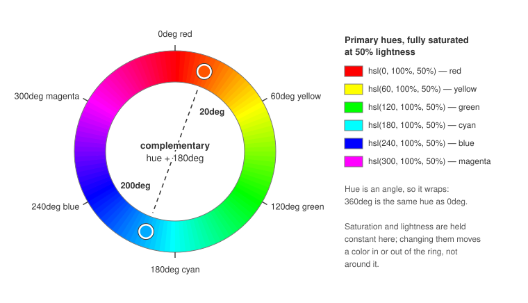

Light and Dark Theming with CSS
|
This content was generated with the assistance of AI and should be verified against the official documentation before being relied on in production. |
Every color a browser paints — text, backgrounds, borders, and more — can be written in more than one CSS
notation, and modern CSS ships several purpose-built tools for offering both a light and a dark presentation of
the same page without duplicating markup or reaching for JavaScript. This page covers those color notations and
theming techniques: the hex and HSL color models and the HSL color wheel, swapping entire stylesheets, the
filter: invert() shortcut, the color-scheme property paired with the prefers-color-scheme media query, and
the experimental light-dark() function. It assumes familiarity with CSS custom properties (--name: value /
var()) and @media query syntax, both documented in CSS Custom Properties and Media Queries; this
page focuses on how those mechanics are put to work specifically for theming.
Color notations: hex, RGB, and HSL
CSS accepts color values in several notations. The most common is hexadecimal, which encodes the RGB
(red, green, blue) color model: a # followed by six characters, each consecutive pair giving the intensity of
red, green, and blue respectively, from 00 to ff.
.element {
color: #854442; /* a muted brick red */
}The same RGB model is also available as a function, rgb(red, green, blue), with each channel given as an
integer from 0 to 255 (or, in modern CSS, a percentage) instead of a hex pair — useful when a value is computed
or needs an alpha channel via rgb(red green blue / alpha).
Neither hex nor rgb() is convenient when you need to derive a related but different color, such as a
complementary color for a dark theme, because red/green/blue channels don’t map intuitively onto "the same hue,
darker" or "the same hue, opposite." The hsl() function solves this by describing a color as hue, saturation,
and lightness instead of raw color channels:
.element {
color: hsl(0, 100%, 50%); /* pure red */
}-
Hue is the type of color, expressed as an angle from 0 to 360 degrees around the color wheel (see below). Red sits at 0 degrees, green at 120 degrees, and blue at 240 degrees.
-
Saturation is the intensity or purity of the color, as a percentage: 0% yields grayscale, 100% yields the most vivid version of the hue.
-
Lightness is the brightness of the color, also as a percentage: 0% yields black, 100% yields white, and 50% is the color’s normal, undiluted appearance.
Because hue is just an angle and lightness is just a percentage, hsl() makes it straightforward to derive a
dark counterpart of a light palette (or vice versa) by adjusting those two numbers directly, as the next section
shows.
The HSL color wheel and complementary colors
Hue is easiest to reason about when visualized as a wheel of angles, since it makes complementary (opposite) colors easy to spot — for example red and cyan, or green and magenta:

The wheel above is drawn with 0deg at the top and hue increasing clockwise, which is exactly how CSS’s own
conic-gradient() walks a set of colors — so background: conic-gradient(in hsl longer hue, hsl(0 100% 50%), hsl(360 100% 50%)) paints this same ring.
The complementary color of any hue is found by adding 180 degrees to it; if the result exceeds 360, it simply wraps back around to the start of the wheel. Applying this to a light theme’s palette produces a plausible starting point for a dark theme:
| Variable | Light hue | +180deg (candidate dark hue) |
|---|---|---|
|
|
|
|
|
|
|
|
|
|
|
|
Rotating the hue alone is rarely enough to produce a convincingly dark theme, though: the saturation and lightness percentages carried over unchanged still describe a light, high-lightness background and a low-lightness (dark) text color. A real dark theme also needs those two swapped — pushing the background’s lightness down toward 0% and the text’s lightness up toward 100%:
:root {
--text-color: hsl(358, 100%, 100%); /* was 6% lightness -- now near-white */
--background-color: hsl(225, 83%, 0%); /* was 94% lightness -- now near-black */
}Swapping palettes via separate stylesheets
The simplest way to ship a light and a dark theme is to keep each palette’s custom properties in its own
stylesheet — light.css and dark.css — both defining the same set of --variable names under :root, and
to link only one of the two <link> elements in at a time:
/* light.css */
:root {
--primary-color: #0c457d;
--secondary-color: #e8702a;
--text-color: #061b1a;
--background-color: #fcf6ed;
}/* dark.css */
:root {
--primary-color: hsl(31, 84%, 26%);
--secondary-color: hsl(200, 81%, 51%);
--text-color: hsl(358, 100%, 100%);
--background-color: hsl(225, 83%, 0%);
}Because both files declare the same variable names, every other stylesheet that consumes them via var()
(see CSS Custom Properties and Media Queries) needs no change at all when the theme is switched — only the <link> (or, as the next sections show, a media query) selecting which palette file applies needs
to change.
The invert() filter shortcut
Rather than maintaining a second palette by hand, the invert() CSS filter function can flip an element’s
rendered colors to their opposites on the fly. It takes a percentage: 0% leaves colors unchanged, 100% fully
inverts them, and 50% is the neutral midpoint that cancels out all color, effectively rendering pure gray:
:root {
filter: invert(100%);
}Applying invert(100%) to the whole page’s root element is the fastest way to bolt a "dark mode" onto an
existing light-only stylesheet, with no palette duplication and no need to touch existing color declarations.
The trade-off is precision: invert() flips hue, saturation, and lightness of everything it’s applied to,
including images and photos, which usually look wrong inverted. In practice this means scoping invert() to
specific text/background containers rather than :root, or excluding image elements with a second, counter-
inverting rule.
The color-scheme property and prefers-color-scheme
Since 2022, CSS can react to the user’s operating-system light/dark preference without any JavaScript, through two cooperating pieces:
-
The
color-schemeproperty, which tells the browser which color scheme(s) an element is prepared to be displayed in. This lets the browser adjust user-agent-drawn chrome it controls directly — form controls, scrollbars, and other built-in system colors — to match, independently of any author styles. -
The
prefers-color-schememedia feature, which lets author CSS branch on the same OS preference to supply actual color values. Its@mediasyntax is the same conditional block mechanism documented in CSS Custom Properties and Media Queries.
color-scheme accepts:
-
normal— the element declares no scheme awareness; it renders with the browser’s default colors. -
light— the element supports the OS light mode. -
dark— the element supports the OS dark mode. -
only— combined withlightordark(e.g.only light), this pins the element to that scheme and prevents the user agent from overriding it (for example, to opt an element out of Chrome’s forced Auto Dark Theme).
Declare it once on :root to opt the whole page into both schemes:
:root {
color-scheme: light dark;
}Or scope it per element, including forcing a specific section to ignore the user’s preference entirely:
header {
color-scheme: only light;
}
main {
color-scheme: light dark;
}
footer {
color-scheme: only dark;
}color-scheme alone only affects browser-drawn chrome, though — it does not, by itself, change any author
colors. Pairing it with prefers-color-scheme and the custom properties from
CSS Custom Properties and Media Queries lets a single stylesheet carry both palettes and switch
between them automatically:
:root {
color-scheme: light dark;
}
@media (prefers-color-scheme: light) {
:root {
--primary-color: #0c457d;
--secondary-color: #e8702a;
--text-color: #061b1a;
--background-color: #fcf6ed;
}
}
@media (prefers-color-scheme: dark) {
:root {
--primary-color: hsl(31, 84%, 26%);
--secondary-color: hsl(200, 81%, 51%);
--text-color: hsl(358, 100%, 100%);
--background-color: hsl(225, 83%, 0%);
}
}This collapses the separate light.css / dark.css files from the previous section into one stylesheet,
switched automatically by the operating system’s setting rather than by which <link> happens to be present in
the page. Because only one branch of the media query ever matches at a time, there’s also no need to layer
invert() on top — there’s nothing left over from the other theme for it to invert.
The light-dark() function (experimental)
light-dark() compresses the prefers-color-scheme pattern above into a single property value. It takes two
colors — one for light mode, one for dark — and resolves to whichever one matches the current color-scheme:
:root {
color-scheme: light dark;
}
.element {
color: light-dark(black, white);
background-color: light-dark(white, black);
}light-dark() still depends on color-scheme: light dark being set on an ancestor (typically :root) — without it, the browser has no signal for which of the two values currently applies. It replaces the
@media (prefers-color-scheme: ...) blocks entirely for simple value swaps, at the cost of only working inside
property values rather than letting you branch on arbitrary CSS structure the way a media query block can.
light-dark() is an experimental CSS function. Check current browser support (for example on
caniuse.com) before relying on it, and keep a prefers-color-scheme media query fallback
for browsers that don’t yet implement it.
|